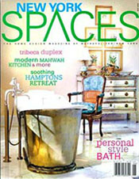
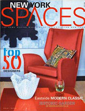
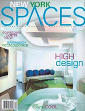
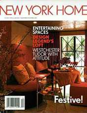
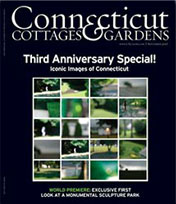
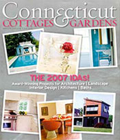

<!DOCTYPE html PUBLIC "-//W3C//DTD XHTML 1.0 Transitional//EN" "http://www.w3.org/TR/xhtml1/DTD/xhtml1-transitional.dtd">
<html xmlns="http://www.w3.org/1999/xhtml">
<head>
<meta http-equiv="Content-Type" content="text/html; charset=UTF-8" />
<title>Gerald Charles Tolomeo LTD | Press</title>

<link href="style.css" rel="stylesheet" type="text/css" />
<link href='http://fonts.googleapis.com/css?family=Roboto+Condensed:300italic,300' rel='stylesheet' type='text/css'>
<link href='http://fonts.googleapis.com/css?family=Playfair+Display:700,400italic,400' rel='stylesheet' type='text/css'>
<script type="text/javascript">
function MM_swapImgRestore() { //v3.0
  var i,x,a=document.MM_sr; for(i=0;a&&i<a.length&&(x=a[i])&&x.oSrc;i++) x.src=x.oSrc;
}
function MM_preloadImages() { //v3.0
  var d=document; if(d.images){ if(!d.MM_p) d.MM_p=new Array();
    var i,j=d.MM_p.length,a=MM_preloadImages.arguments; for(i=0; i<a.length; i++)
    if (a[i].indexOf("#")!=0){ d.MM_p[j]=new Image; d.MM_p[j++].src=a[i];}}
}

function MM_findObj(n, d) { //v4.01
  var p,i,x;  if(!d) d=document; if((p=n.indexOf("?"))>0&&parent.frames.length) {
    d=parent.frames[n.substring(p+1)].document; n=n.substring(0,p);}
  if(!(x=d[n])&&d.all) x=d.all[n]; for (i=0;!x&&i<d.forms.length;i++) x=d.forms[i][n];
  for(i=0;!x&&d.layers&&i<d.layers.length;i++) x=MM_findObj(n,d.layers[i].document);
  if(!x && d.getElementById) x=d.getElementById(n); return x;
}

function MM_swapImage() { //v3.0
  var i,j=0,x,a=MM_swapImage.arguments; document.MM_sr=new Array; for(i=0;i<(a.length-2);i+=3)
   if ((x=MM_findObj(a[i]))!=null){document.MM_sr[j++]=x; if(!x.oSrc) x.oSrc=x.src; x.src=a[i+2];}
}
</script>
</head>

<body onload="MM_preloadImages('images/home1over.jpg','images/home2over.jpg','images/home3over.jpg','images/home4over.jpg','images/home5over.jpg','images/home6over.jpg','images/home7over.jpg','images/home8over.jpg')">
<div id="outer-container">

<div id="phone-header"><p class="phone-header">NYC Office: 212.768.1660&nbsp;&nbsp;&nbsp;&nbsp;Email: <a href="mailto:gerald@tolomeo.com">gerald@tolomeo.com</a></p></div>
<br class="clear" />
<a href="index.html"></a>
<p class="logo-text">Gerald Charles Tolomeo LTD<br /><em>Design & Decoration</em></p>
<a href="https://www.facebook.com/GeraldCharlesTolomeoLtd" target="_blank"></a>
<p class="navigation"><a href="index.html">HOME</a>   <a href="portfolio.html">PORTFOLIO</a> <span class="navigation-selected">PRESS</span> <a href="about.html">ABOUT</a> <a href="contact.html">CONTACT</a></p>
<br class="clear" />
<hr class="hr nudge1" />
<br class="clear" />
<p class="huge-text">Read What People Are Writing.</p>
<hr class="hr nudge2" />


<p class="press-copy"><em>New York  Spaces,</em> Nov-Dec 2009<br />
  <span class="press-copy-bold">"NJ Colonial"</span></p>
<div id="press-quotes">
  <p class="press-copy">Gerald C. Tolomeo creates a modern stage for English classics in Upper Saddle River.</p></div>
<br class="clear" />
<a href="press/Press1.pdf" target="_blank"></a>
<hr class="hr nudge1" />
<br class="clear" />


<p class="press-copy"><em>New York  Spaces,</em> October 2009<br />
  <span class="press-copy-bold">"50 Top Designers"</span></p>
<div id="press-quotes"><p class="press-copy">Gerald C. Tolomeo is honored as one of the <em><br />
&quot;50 Names you need to know in Interior Design&quot;.</em></p>
</div>
<br class="clear" />

<hr class="hr nudge1" />
<br class="clear" />


<p class="press-copy"><em>New York  Spaces,</em> October 2008<br />
  <span class="press-copy-bold">"Natural Mix"</span></p>
<div id="press-quotes">
  <p class="press-copy">Natural textures and an organic palette bring comfort to a <em>New Jersey townhouse.</em></p>
</div>
<br class="clear" />
<a href="press/Press3.pdf" target="_blank"></a>
<hr class="hr nudge1" />
<br class="clear" />


<p class="press-copy"><em>New York  Spaces,</em> October 2008<br />
  <span class="press-copy-bold">"50 Top Designers"</span></p>
<div id="press-quotes"><p class="press-copy">Gerald C. Tolomeo once again honored <br />
  as one of the <em>&quot;50 Names you need to know <br />
  in Interior Design&quot;.</em></p>
</div>
<br class="clear" />

<hr class="hr nudge1" />
<br class="clear" />


<p class="press-copy"><em>New York  Spaces,</em> November 2008<br />
  <span class="press-copy-bold">"New Context"</span></p>
<div id="press-quotes">
  <p class="press-copy">Eastern tranquility meets contemporary energy in a newly constructed home in Franklin Lakes.</p></div>
<br class="clear" />
<a href="press/Press5.pdf" target="_blank"></a>
<hr class="hr nudge1" />
<br class="clear" />


<p class="press-copy"><em>New York  Home,</em> November 2007<br />
  <span class="press-copy-bold">"Brilliant Brownstone"</span> Cover Story</p>
<div id="press-quotes"><p class="press-copy">Designer Gerald C. Tolomeo layers colors,<br />
texture and intriguing form to turn a <br />
somber townhouse interiorinto a <br />
glamorous place for a party.</p>
</div>
<br class="clear" />
<a href="press/Press6.pdf" target="_blank"></a>
<hr class="hr nudge1" />
<br class="clear" />


<p class="press-copy"><em>Connecticut C&amp;G,</em> September 2007<br />
  <span class="press-copy-bold">"Big Time"</span></p>
<div id="press-quotes"><p class="press-copy">A Manhattan based designer creates <br />
  magic in Stamford, CT.<em></em></p>
</div>
<br class="clear" />
<a href="press/Press7.pdf" target="_blank"></a>
<hr class="hr nudge1" />
<br class="clear" />


<p class="press-copy"><em>Connecticut C&amp;G,</em> July 2007<br />
  <span class="press-copy-bold">"Interior Design Award"</span></p>
<div id="press-quotes">
  <p class="press-copy">Using a bright palette, dynamic furnishings and dramatic lighting, Tolomeo brought the zip and edge of Manhattan to a small country cottage.</p>
</div>
<br class="clear" />
<br class="clear" />

<hr class="hr nudge3" />
<p class="navigation-footer"><a href="index.html">HOME</a>   <a href="portfolio.html">PORTFOLIO</a> <strong class="navigation-footer-selected">PRESS</strong> <a href="about.html">ABOUT</a> <a href="contact.html">CONTACT</a></p>
<br class="clear" />
</div>
</body>
</html>
